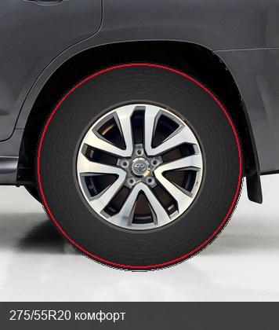

Комфорт · безопасно
275/55R20 113V+
Круг 811 мм · боковина 151 мм · на 8.5J
Плюсы
- Выше штата на 18 мм — арка плотнее, стыки мягче
- Alenza 001 / EfficientGrip: тихо, мокрое торможение, индекс 113–117
- Диск, гайки и сверловка не трогаем
Минусы
- Спидометр занизит примерно на 2%
- На 10 мм уже завода — визуально чуть «тоньше» 285
- Зазор в арке остаётся, это не 18-дюймовый вид